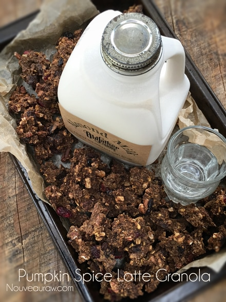
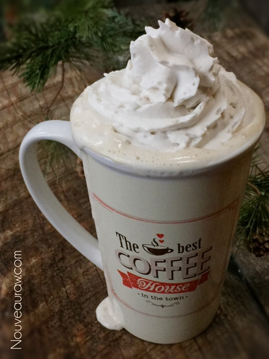

Pumpkin Spice Latte Granola

~ raw, vegan, gluten-free ~
I created this recipe for you coffee lovers! I can’t say that I am a lover of coffee but… wait, let me honest with you and myself…. I don’t like plain hot coffee at all, I LOVE the smell of it but just not the flavor, and I never have. Ah but I do love the “dolled” up coffees.
I grew up surrounded by a family of coffee drinkers. Grama’s house was always the hub for the family to gather, all day, every day. She would turn on the coffee pot when the sun started streaming through the windows, and it stayed on till the sun dipped low on the horizon.
I dabbled with it off and on, hoping to like it so I would fit in with the rest of the family gang, but as in all things, I was always the oddball. Haha, But what I have discovered is that I do love coffee with tons of sweetener, milk, and flavorings. I could become highly addicted to it in that form, but I block the temptation whenever it calls. I do, however, indulge in one here and there.
Bob will order a special one for me as seen in the photo below. I could order them just for the beautiful art alone! :) I go through spells of drinking iced, cold-pressed coffee which I enjoy with stevia but I can see that as the cooler weather approaches I am craving something a tad warmer to drink.
Here are a few options on how you can tweak this recipe:
- Decaffeinated coffee ~ If you like coffee but not the effects of the caffeine, you can use decaffeinated coffee grounds in this recipe as well.
- Coffee flavoring extract.
- Espresso Powder – If you prefer a more subtle coffee flavor, use 2 tablespoons of espresso powder. For a more prominent flavor, use 3 tablespoons.
- The instant coffee powder may also be substituted, but you will likely need to use more to achieve the same flavor.
- Tip ~ always start out with a small amount and increase a little at a time. Adding a little raw cacao with also enhance the coffee flavor.
Outside of the hint of coffee and pumpkin what I enjoy about this granola is that it has a hint of savory to it. I love sweet, thick, and chewy granola but this is a nice change. It’s not sticky, overly sweet, or chunky. More light, dry and loose. What a description, lol, but there you have it. This recipe is one ingredient away from being “nut-free”… so if you are allergic or don’t want to have nuts in your diet, you can replace the pecans with pumpkin seeds, which compliments the pumpkin!
Yields roughly 10 cups granola
Dry Ingredients:
- 3 1/2 cups rolled, gluten-free oats, soaked
- 1 cup raw pecans, soaked
- 1 cup dried cranberries
- 1/2 cups raisins
- 1/4 cup chia seeds
Wet Ingredients:
- 3/4 cup pumpkin puree, raw or canned
- 1/3 cup raw coconut crystals
- 1/4 cup raw applesauce
- 1/4 cup maple syrup
- 2 Tbsp raw cacao powder
- 1 Tbsp cold-pressed olive oil
- 1 Tbsp lemon juice
- 1 Tbsp pumpkin pie spice
- 2 tsp instant espresso coffee
- 1 tsp liquid NuNaturals stevia
- 1 tsp vanilla extract
- 1 tsp ground Ceylon cinnamon
- 1/2 tsp Himalayan pink salt
Preparation:
- After soaking the oats, drain and discard the soak water. Rinse until the water starts to run clear.
- Drain and discard the soak water from the pecans and give them a final rinse before adding to the bowl.
- In a large bowl combine the oats, pecans, cranberries, raisins, and chia seeds. Set aside.
- In a small bowl combine the pumpkin puree, coconut crystals, applesauce, sweetener, oil, lemon juice, pumpkin spice, coffee ground, vanilla, cinnamon, and salt. Mix well.
- This can also be down in a food processor if you feel like cleaning all of that. :)
- To make your own Pumpkin Spice blend, combine the following in a jar and shake, 4 tsp ground cinnamon, 2 tsp ground ginger, 1 tsp Allspice, and 1 tsp nutmeg.
- Pour the wet ingredients over the “dry” ingredients and mix well.
- Drop the batter in clusters on non-stick sheets that come with the dehydrator.
- Dry at 145 degrees (F) for 1 hour, reduce to 115 degrees (F), and continue to dry for 8-10 hours or until dry.
- Halfway through, transfer the batter to the mesh sheet to speed up the dry time.
- Dry times will always vary depending on the climate, humidity, model of the machine, and how full it is.
- All to cool, then store in an airtight container. This will freeze well too!
- To learn more about maple syrup by clicking (here).
- Why do I specify Ceylon cinnamon? Click (here) to learn why.
- What is Himalayan pink salt and does it really matter? Click (here) to read more about it.
- Are oats gluten-free? Yes, read more about that (here).
- Are oats raw? Yes, they can be found. Click (here) to learn more.
- Do I need to soak and dehydrate oats? Not required but recommended. Click (here) to see why.
Culinary Explanations:
- Why do I start the dehydrator at 145 degrees (F)? Click (here) to learn the reason behind this.
- When working with fresh ingredients, it is important to taste test as you build a recipe. Learn why (here).

Bob and I enjoy the cozy feeling we get at our local coffee shops. Sometimes, when we just need to get out of “dodge”, so we pack up our laptops and head down to the coffee shop. We love the ability to socialize or just snuggle up in our corner of the cafe and enjoy each other’s company.
One thing that we have learned over the years is that coffee shops have small tables and when we sit across from one another at a small table, we have deep talks. Not sure what it is that brings this out in us but it has become a time we cherish. What do you do to “get out of Dodge”?
© AmieSue.com